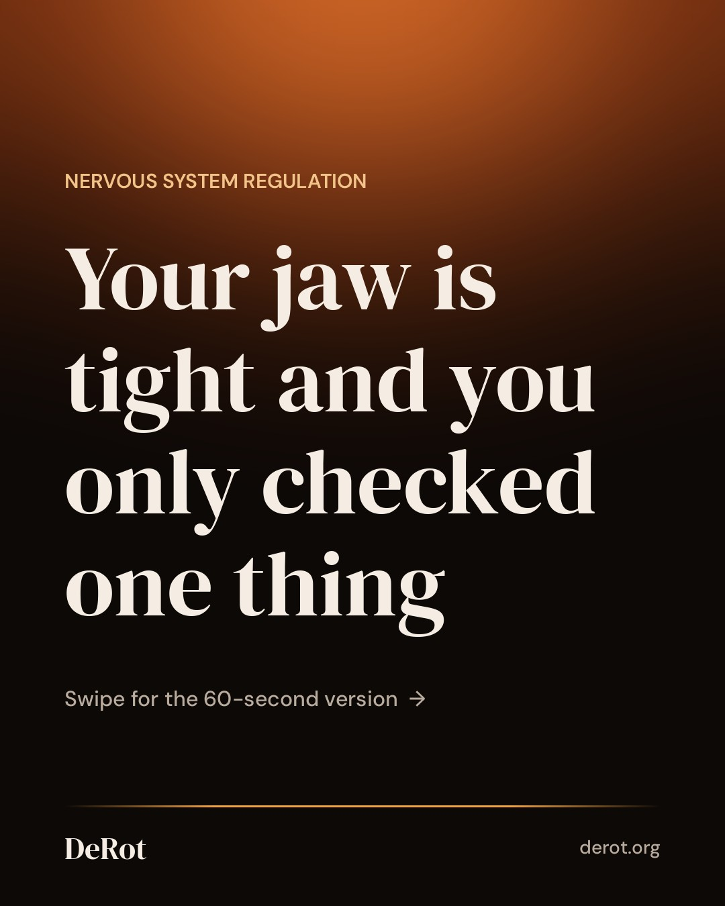
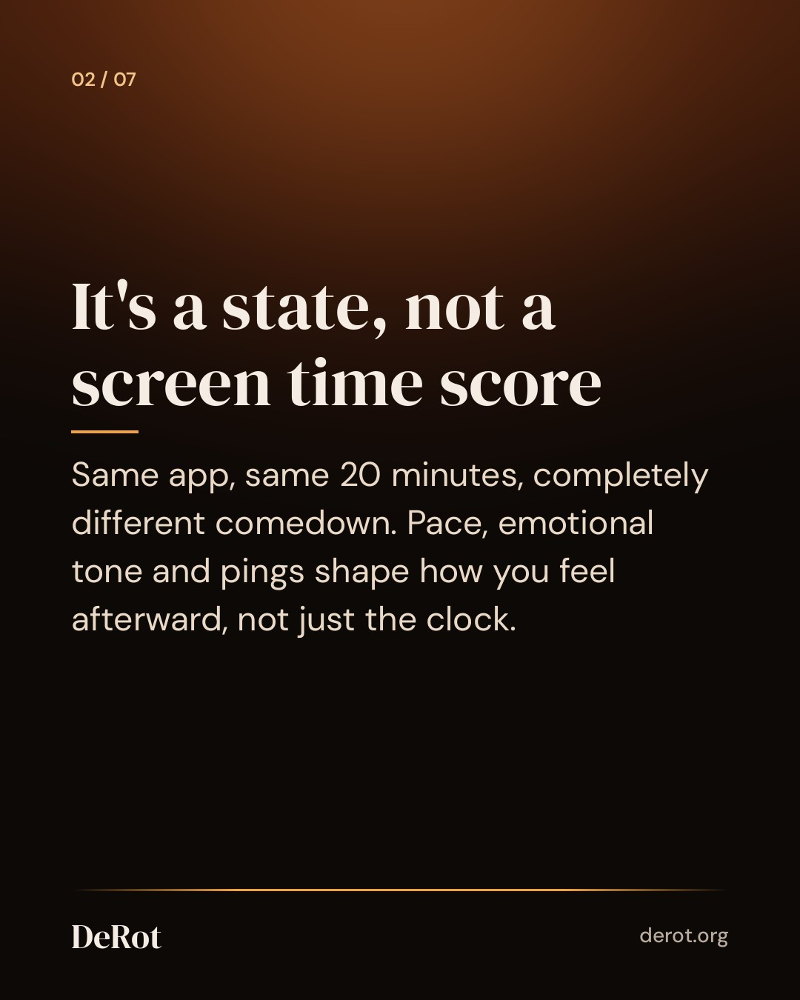
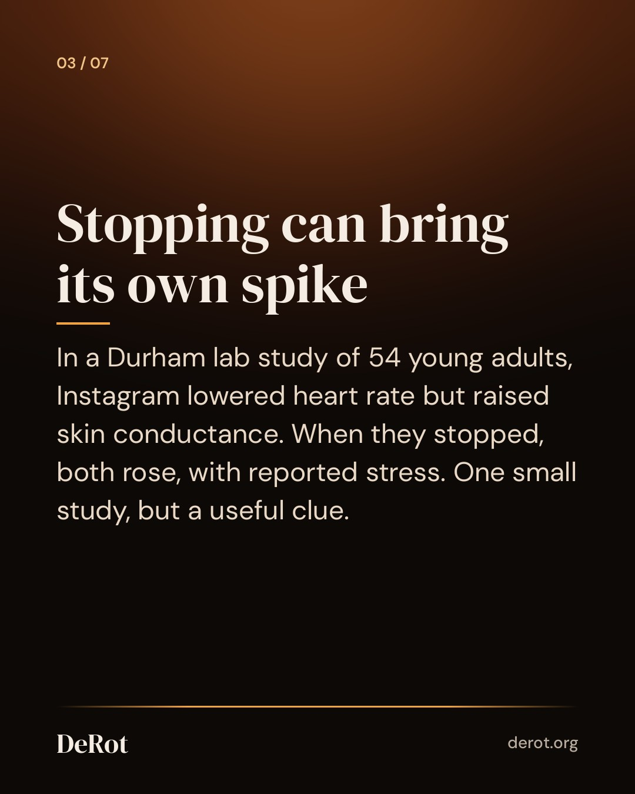
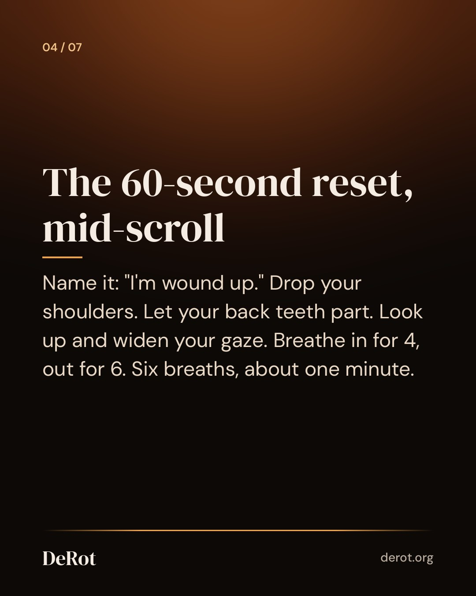
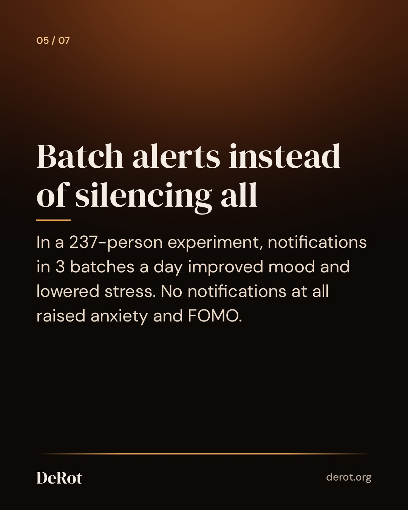
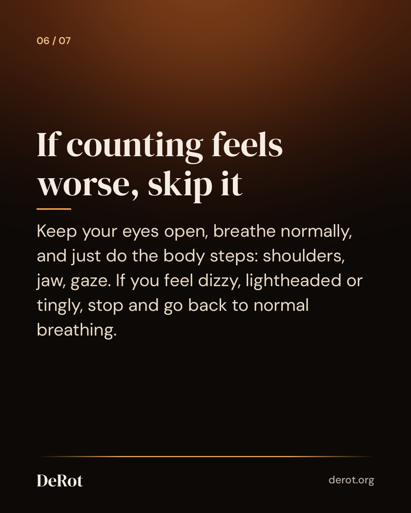

Nervous System Overload From Your Phone: How to Come Down Mid-Scroll
Slides (Threads cover image; Instagram posts the reel)







Instagram Reel (38s)
Instagram caption
That wired-but-flat feeling after "one quick check" has a plain name: nervous system overload. Not a diagnosis, just a name. It tends to show up in the body first. Back teeth pressed together, shoulders creeping up, a buzzy head that won't settle on one thing. The useful part: the moment you put the phone down seems to be a pressure point of its own. So that's where a short reset earns its keep, not at a gate before you open the app, when you're usually fine anyway. On the evidence: a meta-analysis of 223 studies found slow breathing raises vagally mediated heart rate variability. Whether a longer exhale adds extra benefit is still early and mixed. We use 4 in, 6 out because it's comfortable, not because it's proven better. Two common mistakes: forcing the exhale (six counts should feel like a slow leak, not a push) and glancing at the feed between breaths. Turn the phone face down for the minute. If anxiety, sleep problems or distress keep coming back, talk to a professional. A breathing reset is for everyday overstimulation, not a replacement for care. Full guide: link in bio. #breathwork #nervoussystemregulation #slowbreathing #digitalwellbeing #mindfulscrolling
Threads
Useful thing I read: in a small Durham study, people's heart rate and skin conductance rose right after they stopped scrolling Instagram, along with reported stress. Ordinary users too, not only heavy ones. So the comedown is a good moment to step in. Shoulders down, jaw loose, six breaths of 4 in and 6 out. One minute. https://derot.org/blog/nervous-system-overload-from-phone/
Ever checked your phone for one thing and looked up 20 minutes later with a tight jaw and a buzzy head? You don't need to delete anything to come back down. Early research suggests scrolling can keep your body quietly switched on, and the moment you stop can bring a small spike of stress. That makes mid-scroll a good place for a reset. Try it: drop your shoulders, part your back teeth, look up and widen your gaze, then take six slow breaths, 4 counts in and 6 out. About a minute. Then decide on purpose whether to keep scrolling. The full guide covers what the research shows, where it's still early, and why batching notifications may beat switching them all off.
Schedule (UTC)
| queued | 2026-10-16T18:42:00+00:00 | ||
| threads | queued | 2026-10-16T18:42:00+00:00 | |
| queued | 2026-10-16T23:30:00+00:00 |